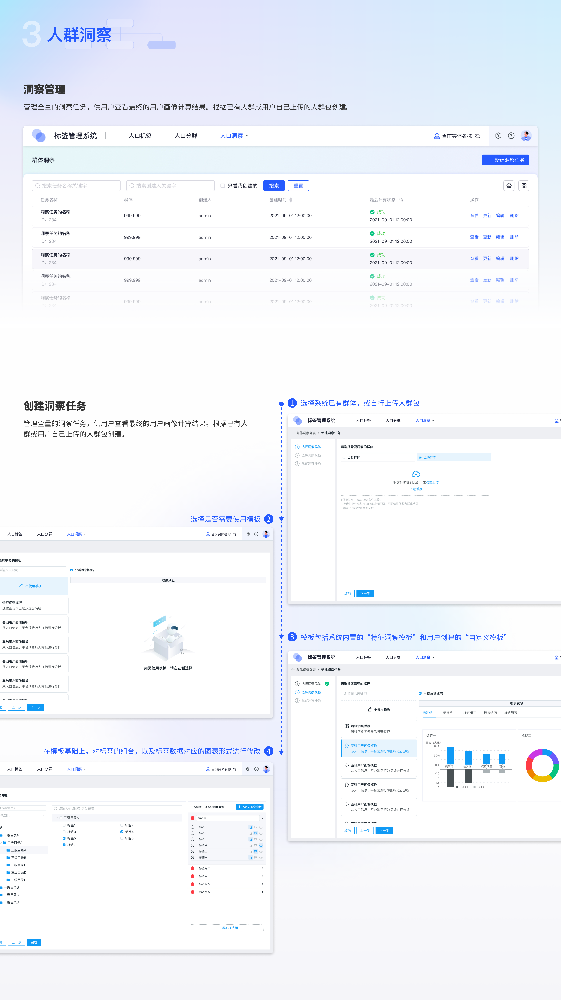
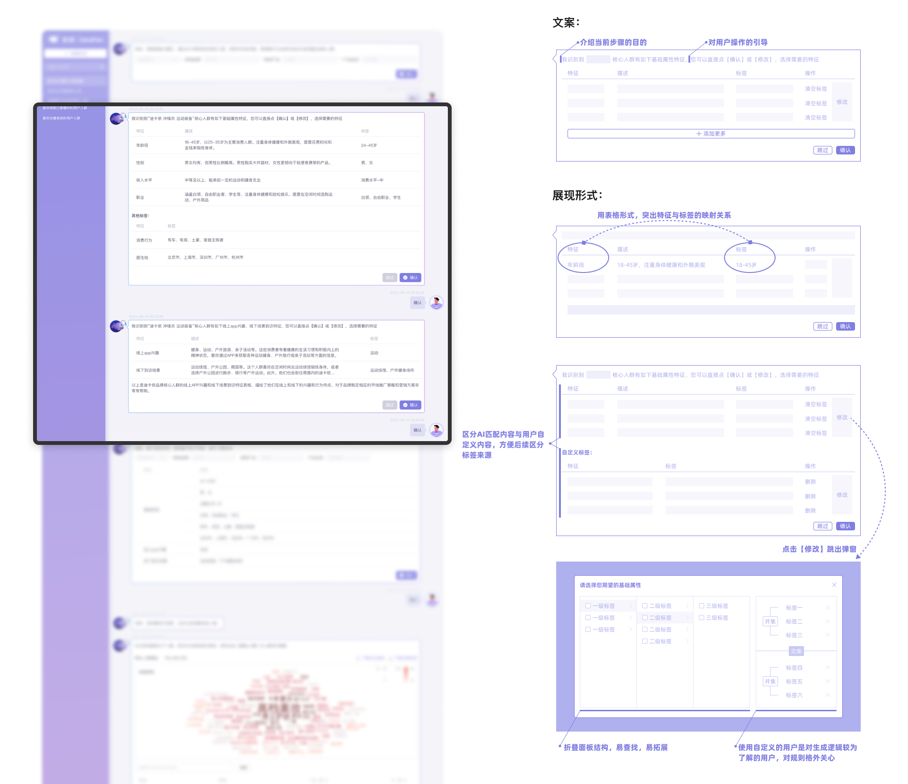
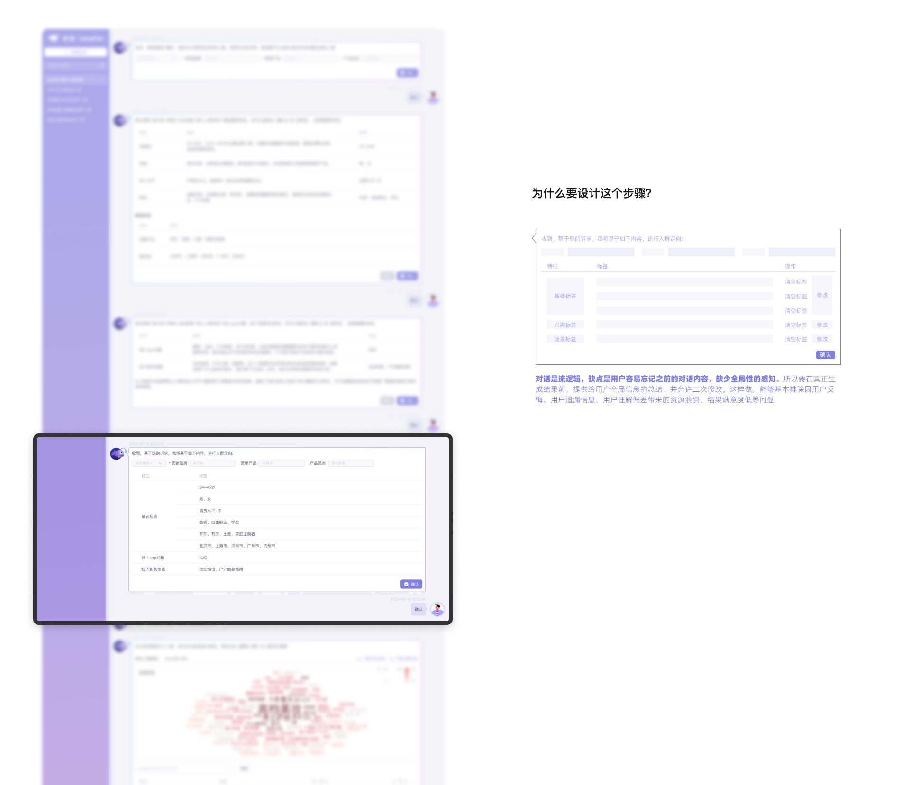

感谢观看
zhuangziyu1809@yeah.net


智能推荐效果demo:


产品背景
传统的人群圈选业务通常采用【标签体系】与【机器学习】两种方式，但这两种方式的学习成本较高，需要前期的数据沉淀或标签储备，对于小白用户来讲学习难度大、使用门槛高。
在AIGC技术趋势推动下，我们产生了新的产品设计思路：即利用【AI推荐技术】以及【对话式交互形式】，省去前期用户准备数据或构思人群特征的过程，通过简短的对话过程圈选目标人群。
对比分析
以下流程图，从用户使用的角度，简要展示了三种提人方式的过程。通过对比分析，可以得出各种方式的优劣势如下
标签体系
劣势：学习成本高；配置过程复杂
优势：配置自由度高；调整难度小；直观性&可解释性
机器学习
劣势：依赖一方数据；“黑盒”过程；调整难度大
优势：过程简单快速
AI 对话：
劣势：依赖AI训练技术；目前不适合精准化的人群圈选，更适合灵感提供
优势：相比于【标签体系】，省去了大量的规则配置过程，降低了用户的心智成本；
相比于【机器学习】，交互过程更友好，过程逻辑更易懂，调整难度小
从上述分析，我们可以得到。AI对话的提人方式的优势在于，帮助【明确营销的目的，但不了解目标群体的特征，需要灵感支持】的用户。在未来，如果能将AI营销灵感提供与前两种方式进一步结合，能满足用户更多更深的营销需求
用户体验地图
通过分解用户在对话过程中的阶段和目标，我们设计了以下用户体验流程。通过此地图，可以更为清晰地了解用户与产品之间的接触点与交互过程
产品体验框架 & 具体方案
产品设计框架大致分为三部分：使用前、使用中、以及相应的界面细节及组件设计
用户的使用流程大体分为五步：
1.确认营销目标（例如：需要分析的产品、品牌等）；
2.根据用户提供的目标，生成各种类型的特征推荐。用户可在此基础上进行增删改查；
3.对以上所有信息进行汇总，并最终确认；
4.系统生成对人群的计算结果，包括词云图、特征的TGI及IV值等；
5.用户对满意的人群进行提取，生成人群包，以供后续应用使用。
使用前：功能触达
「如何让用户知道这个新功能？」
banner设计
第一步：用户输入营销目的
「你想要分析什么」
第二步：AI提供特征推荐，用户在此基础上修改
「AI生成的结果是你想要的吗？」
第三步：对所有信息进行汇总确认
「对之前的选择有反悔吗？有疏漏吗？」
第四步：获得人群计算结果
「如何直观地呈现计算结果，主力决策」
用户确认所需用户特征的信息后，系统将调取数据，计算出此人群的具体特征数据（IV、TGI等），并以词云图和表格的形式呈现出来。用户根据具体的数据，可以进一步对人群包的特征进行删减。
以下是对气泡中内容的呈现方式方案的对比分析
第五步：将满意的人群生成人群包
「计算并储存，以便后续应用」

人群计算结果作为整个对话的结果内容，关乎着用户最后对于是否要生成人群包的判断，所以结果的展示尤为重要。
这里，对于页面的结构和布局，我根据不同的分区维度，产出以下三种方案，并对于三种方案进行分析，最终采用【在左侧记录对话的主体内容，利用抽屉隐藏用户的提取动作】的设计方案
后续应用
「常用路径：查看任务详情、查看洞察报告」
人群包生成后，可用于洞察、投放、导出、分析等各种场景。以下是对话完成后【查看任务详情→查看洞察报告】的路径
界面设计细节：对话气泡 & 自适应方案
「样式与常规对话类产品的异同点」
AIGC对话产品的UI设计目前较为相似，但应用于营销时，需根据使用流程重新设计视觉层级和动线。在此场景中，用户较少使用信息输入框，多数操作通过气泡内按钮完成，回答也多为自动生成。因此，应强调AI助手的内容，淡化用户回复，使视觉焦点集中在AI内容上。
此外，为适应不同尺寸屏幕的需求，我们在自适应方案上也做了调整。
动画设计
「提升产品趣味性与宣传效果」
为了在产品从0到1的初创阶段提升产品的趣味性和宣传效果，我们精心策划了一款富有趣味性的小动画，巧妙隐喻AI数据与我们平台长期积累的标签数据之间的匹配过程。
在初版方案中，我们设计的小动画不仅被用作词云的加载动画，当用户在等待词云计算结果时，这段动画能够以其活泼生动的画面和流畅的动作，有效缓解用户的等待焦虑。同时，这款动画更可作为我们对外宣传的利器，通过视觉的冲击力和故事性，生动展示我们平台AI技术与标签数据的高效匹配能力，从而吸引更多潜在用户的关注，加深他们对我们产品的认知和记忆。
通过这款趣味性小动画，我们期望能够在提升用户体验的同时，加强产品的品牌形象和市场竞争力，为产品的后续发展奠定坚实基础。
概念脚本：
最终方案一：

页面效果：